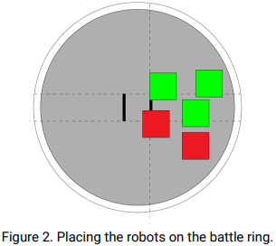

The robot must be a two legged walking humanoid biped that must shift its center of gravity to maintain its balance when walking. The Humanoid Sumo robots must be within the 3kg weight limit. The robot should fit in a square with the side length of 20 cm (200 mm), maximum height for the robot 50 cm. The battle ring has a diameter or 154 cm made of non-magnetic material. The humanoid robot must be fully autonomous. There is no age limit for Humanoid Sumo.
The matches will take place between two teams, each team having one or more members. During the battles only two team members from each team may approach the ring; The operator and the assistant will enter the game area, the other team members must watch from the audience. According to the rules, the teams will compete in a Dohyo (sumo ring) with an autonomous robot that they have constructed themselves to the specifications in Section 3 and 4.
The match starts at the referee's command. The match is over when one of the two robots get 2 points "Yuhkoh". The referee determines the winner of the match. After the match the operator and the assistant will go to the area designated for the challenge and wait for the next game.
Matches will take place between two teams that have built a humanoid robot for this category. During the battles, only two members can approach the ring, the other team members must follow the match from the public.
A “team” is composed of one to five students who have built a robot for this event.
The humanoid robot must be an autonomous robot constructed by themselves prior to the competition to the specifications below. This robot category is not a workshop where you may build robots after arrival. There will be limited time for adjustments and changes to the robots and their programming during the event.
One person can be an operator for a maximum of 2 robots.
If two robots of the same team advance to quarters/semifinals/finals and play one against the other, they must play the match, without demanding that one of them advance without play, or to demand to arrange the matches or the opponents.
Each team/robot will be assigned a number on check-in and should have a unique name or identity to be easily recognized by spectators and officials when on the field and when scoring.
A robot must fit within a square with the side length of 20 cm (200 mm). Maximum height for the robot is 50 cm (500 mm).
Any type of electronics are permitted, there is no limitation to kits, module brand or home made components as long as they do not present safety risks.
The total mass of a robot at the start of a match must be under 3kg (3000g).
All robots must be autonomous. Any control mechanisms can be employed, as long as all components are contained within the robot and the mechanism does not interact with an external control system (human, machine, or otherwise). The only exception being the start/stop command.
The robot must be a two legged walking humanoid biped that must shift its center of gravity to maintain its balance when walking.
There will be limited time and space for last minute design improvements and adjustments, however, the robots should be completed at the time of registration, and once check-in takes place, the robot or its programming may no longer be modified. Robot battery should also be sufficiently charged once the robot is checked in.
Any robot design is allowed, if not subject to the limitations of section 2.2.
The robot must stand still for 5 seconds before the start of the match. After 5 second the robot can move.
It is forbidden to use devices that can store liquid, dust, gas or other substances to be thrown to the opponent.
Devices that throw objects to the opponent are not allowed.
The robot can be started from a remote or from a button placed on the robot.
Sticky substances to improve traction are not allowed. Wheels and other components of the robot that are in contact with the ring should not be able to lift and hold a standard A4 (80mg / m²) sheet for more than 2 seconds. Robots will be screened at the approval stage and may be rechecked at the referee's request at any time during the competition.
The robot must have 2 arms. Each arm extended length shall not exceed the extended leg length.
The robot must have a head.
When walking, one foot must lift off the floor, while the other foot is balancing the robot.
When walking, the foot that balances the robot must have a knee-joint angle greater than 90 degrees. At any point if this is not the case, the robot will not be considered walking.
Surface pressure-enhancing devices such as vacuum pumps or magnets / electromagnets are NOT allowed.
All robots must be autonomous. The autonomous robot movements will have to detect and / or react / attack the movements of the adverse robot. If there are doubts as to the robot's autonomy, the referee has the right to inspect the logical control of the robot.
The feet can be of any shape and form as long as all of the following are maintained:
A. The robot’s foot is defined as the part of the robot that is contacting the surface of the arena (ground).
B. The maximum length (size) of the foot must be less than 50% of the length of the extended robot’s leg. The leg length is defined as the distance between where the robot's foot touches the ground and the axis that connects the leg to the upper body of the robot.
C. The maximum length of the foot must be less than 20 cm (200 mm).
It is forbidden to use devices for jamming opponents, such as radiation sources to saturate sensors, ultrasound transmitters, or other devices with similar effect, are strictly forbidden.
There are not allowed components of the robot that can destroy the playing area. Do not use components intended to destroy the opponent's robot. The thrusts and the normal blows specific for a sumo match, are not considered intentions for destruction.
When a robot is standing or walking, a rectangular outline around the left and right foot shall not overlap.
Parts that could break or damage the ring are not allowed. Do not use parts that are intended to damage the opponent’s robot or its operator. Normal pushes and bangs are not considered intent to damage.
The startup robot may expand. It is not allowed to separate the robot into 2 or more pieces. The robot must remain a single centralized robot. Components with a mass of less than 5 grams will not result in loss of the match.
Any devices that throw flames are not allowed.
Any devices that throw objects towards the opponent are not allowed.
Robots who will not follow these rules will be disqualified.
All robots must be autonomous. The autonomous robot movements will attack the adverse robot. If there are doubts as to the robot's autonomy, the referee has the right to inspect the logical control of the robot.
The robot must be autonomous.
This step will take place before the beginning of the competition. Each team will have to pass the technical inspection stage in order to be able to participate with the robot in the competition. After approval, all teams will necessarily remain in the competition room. The stages of the technical approval process are:
The feet of the robot and other parts that are in contact with the sumo ring must NOT be able to pick up and hold a standard paper A4 (80g/cm2) for more than 2 seconds.
Verify the size of the robot by placing a 20.3 cm x 20.3 cm (203mm x 203mm) bottomless box/frame over the robot. The height of the robot will be measured maximum 50.3 cm (503 mm).
It will be checked if the number exists on the outer casing of the robot.
Weigh the robot on a digital scale. The maximum value of the scales shall be 3005 kg.
The robot will no longer be retained after approval.
Check the operation of the 5 second delay when starting
After approval the first 4 teams will remain in the waiting area, near the game area. The rest of the teams will return to the area assigned for them.
It will be checked if the operator and assistant have the protective gear.
The inside of the ring is defined as the surrounding black area, but also includes the white line. Any surface outside the ring will be called the outside of the ring.
A 3.5% tolerance is allowed in the construction of the contest surface.
Starting Lines (Shikiri-Sen) brown color 20x2 cm (200x20 mm), as seen in figure 1.
The playing surface is defined as a 3 mm thick black disc with a diameter of 154 cm (1504mm).
There is a safe space outside the ring. This space can be any color, it can be of any material and can have any shape. This area with the ring at its center will be called the ring area.
The robot must be a two legged walking humanoid biped that must shift its center of gravity to maintain its balance when walking.
Robots will be divided into groups according to the number of participants. The competition will take place in the group / quarter / semifinal / final system to allow as many rounds of play as possible for each robot.
The order of the robots in the groups will be made random, it will be made after the official opening of the competition, and will be available on the website for all the participants. The ones that pass the groups will play quarter/semi finals/finals.
If the number of participants will not be enough for the groups the competition will be played from the beginning using the pyramidal system. The position in the pyramid will be random.
Each match takes place in the best of 3 rounds and will be supervised by 2 referees (1 main referee and 1 assistant), except for the finals where the match is played in the best of 5 rounds. The decisions of the referees must be unanimous and are final, and their challenge leads to disqualification from the match.
After the homologation the teams, which will follow at the start, will remain at the competition area, in the waiting area. The teams will leave this area only if the referee agrees, or only for repairs and they must return in the time set by the referee. If the team doesn’t return at the first call, they will lose the match.
During the contest a team is entitled to 2 interruptions for reprogramming during matches, 5 minutes each (2 interruptions in the contest).
Other breaks are only allowed for mechanical problems and only with the referee's agreement of maximum 5 minutes each. This rule is applied only when a match is taking place. Besides matches, changes and reprogramming are allowed. Teams are required to appear at the start within 1 minute of receipt of the request, otherwise they will lose the match.
Each team has the responsibility to follow the starting grid (schedule), displayed on the website and on the projector.
If a team is called to play and does not arrive in 5 minutes the robot is disqualified.
For the operator and the assistant it is mandatory to wear gloves and protective eyewear. The protective gear is mandatory to be worn in the game area and during the matches. The protective gear will be checked at homologation.
After approval all teams remain in the competition area. Teams can only leave the room for repairs. If a team leaves the competition room, it must return within the specified time by the referee. If the robot does not appear on the first call, it loses the match.
The missing of the protective gear entirely or partially will can result in losing a ”Yuhkoh” point to the opposite team, or the team can be disqualified.
The match may be stopped by the judge if the robots do not touch each other for more than 15 seconds and no clear will to fight is observable.
A match consists of 3 rounds, each of which lasts for a maximum of 3 minutes, with the possibility of time extension by the referees.
Robot start position. At the instructions of the referees, the two teams approach the ring to place the robots on the contest surface. The operators will place the robots at the same time on the ring. The Judge will give the signal. After placing, the robots may not be moved anymore. After placing the robot on the ring, the operator and/or the assistant must retreat to the marked safe area.
Extension: an additional match, if requested by the referee, will take up to 3 minutes
A team receives a "Yuhkoh" point when they win a round.
The first team that wins two rounds or receives the first two points "Yuhkoh" until the end of the time limit will win the match.
Any part of the robots must be placed behind the Shikiri-Sen (staring lines) as highlighted in green in Figure 2. The robot shall not go over the starting line toward the opponent. The robot should be placed on and within the extended lines vertically from the both edges of Shikiri-Sen (starting line). The referee will check if the robots are placed ok. If the placement is not correct, the robot positioning will be made again.
If the time limit is reached before a team receives two "Yuhkoh" points the team with the most points will win the match. (for example 1-0 points out of 3 matches).
If a match is not won by any team during the limit, an additional round will be played. After all options have been exhausted, the winner of the match may be decided by referees by drawing lots or other criteria set by the arbitration panel
If one of the two robots does not start, a restart will occur. If the rest of the robot does not leave, the match will be won by the moving robot
After a match is over, the teams must return to the area reserved for them.
If the robots get stuck, the rules from point 6.1 will be applied.
The Start, Stop, Interruption or Continuation of the match is announced by the referee.
A match will be played for a maximum of 3 minutes. It will begin and end at the referee's command.
End of the match. When the referee announces the end of the match, the two teams are allowed to lift the robots from the ring.
A knockdown occurs when a robot is knocked down by its opponent. 2 points shall be added to the opponents score.
The robots are entangled or orbiting each other with no perceivable progress for 10 seconds there will be one restart.
a. If at restart the situation is repeating, the winner will be the robot that moves more and shows the willing to fight.
b.
If at restart the situation is repeating, the robot that moves faster and attack more will be the winner of the round.
A slipdown occurs when a robot falls on its own. 1 point shall be added to the opponents score.
A ringout occurs when any part of a robot contacts the surface outside the arena. 3 points shall be added to the opponents score.
Both robots move, without making progress, or stop (at the exact same time) and stay stopped for 5 seconds without touching each other. However, if one robot stops its movement first, after 5 seconds it will be declared as not having the will to fight. In this case the opponent shall receive a “Yuhkoh” point, even if the opponent also stops. If both robots are moving and it isn't clear if progress is being made or not, the judge can extend the time limit up to 30 seconds.
A knockout occurs when:
a. A robot fails to get up within a 10 second countdown.
b. A robot is unable to move or walk when commanded by a judge within a 10 second countdown.
When a knockout has been declared the match is immediately ended, and the match shall be awarded to the opponent.
If both robots touch the outside of the ring at about the same time, and it can not be determined which touched first, a rematch is called.
The team of the robot shall be given permission by the judge to place their robot face down within the arena without further penalty provided it can get up within a 10 second countdown.
In the case the winner can't be declared in any of the above situations, there will be a special rule: A bottle will be placed in the center of the Dohyo and the first robot that touches it is declared the winner.
Extension: an additional match, if requested by the referee, will take up to 3 minutes
a.
Both robots move without making any progress, stop (at the same time), or stop for 10 seconds without touching.
b. If both robots touch at the same time the outer surface on which the ring is placed and it can not be determined which robot has touched the first exterior, the round will be replayed.
When determining the winner falls to the arbitrators, after exhausting the Humanoid Sumo competition criteria, the following considerations are considered:
a. Quality of robot construction and programming.
b.
Penalty points accumulated during the match.
c.
Team attitude during the match
If one of the two robots doesn’t start there will be one restart. A.If at restart the same robot doesn’t start, the point will be won by the robot that moves.
A competitor may ask to stop the match when he / she is injured or the robot has suffered damage and the game can not continue.
If a robot fails during a match, the Referee will allocate a 1-minute repair interval. This interval can be extended up to 5 minutes with the organizers' agreement. Repairs will be supervised by an assistant referee to avoid changing the robot modules with other non-approved ones.
Failure to continue a match. When the game can no longer continue due to injury of the competitor or damage to the robot, the competitor who caused the injury or robot's damage or failure will lose the match. The only robot to robot damage is permitted during official matches. If one can not decide who is to blame, the one who will ask for the match to be stopped will be declared defeated.
If a robot can not be repaired within the specified interval, the match is won by the opposing robot and the defective robot team can continue the repairs until the next match in which they participate and in that case being supervised by a referee / member of the organizing committee
If there are any modifications made to the robot after homologation, the robot must again pass the homologation stage.
Replacement of defective parts can be performed and batteries can be charged during the competition, if necessary
When teams are called to the dohyo for their robot, teams present to the field promptly, and each team has to greet the other with a bow or handshake.
The competitors are forbidden to enter the ring during the match, unless the referee stops the match after the grant of a " Yuhkoh ".
Players have to behave in a respectful manner, and are not permitted to use profanity or insulting words or actions, or to have their robot use such words or actions. Unsportsmanlike behavior will not be tolerated. Such behavior will result in a violation or disqualification at the judge’s discretion.
The competitors are forbidden from demanding to stop the match without appropriate reasons.
Only one team member may enter the match area to place and take the robot of the dohyo.
No objections shall be declared against the referees / judges' decisions.
The decisions of the referee must be unanimous and are final; questioning these decisions leads to disqualification.
The lead person of a team can present objections to the organizing committee, before the match is over, if there are any doubts in the exercising of these rules. If there are no Committee members present, the objection can be presented to the judge before the match is over.
The Champion will be the robot with the most "Yuhkoh" points.
As long as the concept and fundamentals of the rules are observed, these rules shall be flexible enough to encompass the changes in the number of players and of the contents of matches. Modifications or abolition of the rules can be made by the local event organizers as long as they are published prior to the event, and are consistently maintained throughout the event.
The Robotics Championship organization and the organizing team members will never be held responsible nor liable for any incidents and / or accidents caused by participating teams or their equipment.
Participating teams are always responsible for the safety of their robots and are liable for any accidents caused by their team members or their robots.